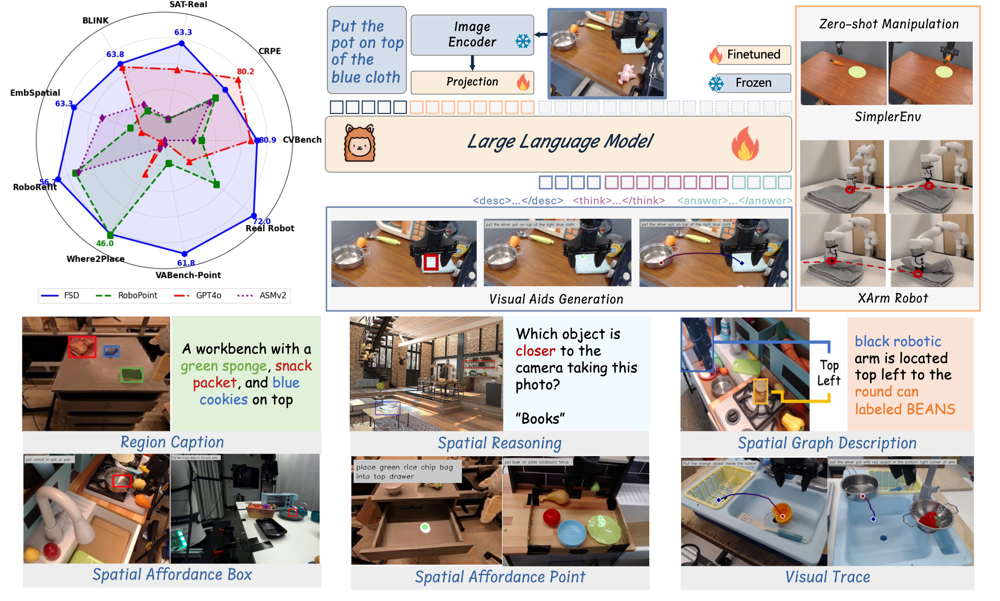
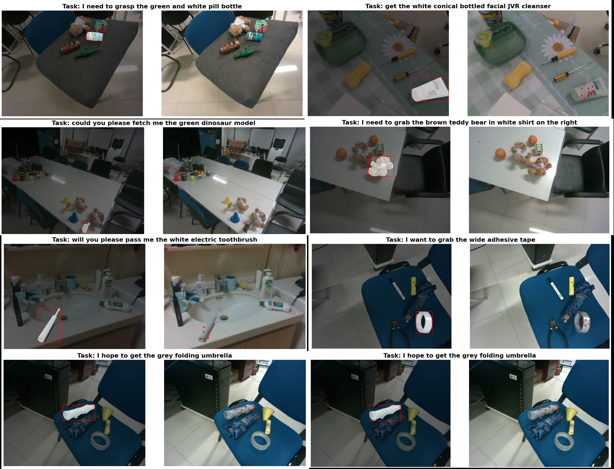

Overview of FSD Framework. FSD unlocks visual aids reasoning and generation through Spatial Relationship-Focused CoT, demonstrating exceptional generalization capabilities that enable zero-shot robot manipulation and achieving remarkable performance across multiple benchmarks.
Evaluation of Spatial Understanding and Reasoning Capabilities
🏆 Outstanding Performance on Spatial Reasoning Benchmarks
We evaluate FSD-13B on 5 spatial reasoning benchmarks (CVBench, CRPE, SAT, BLINK, EmbSp) and demonstrate exceptional performance. Our model achieves the best overall ranking of 1.3 across all benchmarks.
Table 1: Performance comparison on 5 spatial reasoning benchmarks
| Model | CVBench | CRPE | SAT | BLINK | EmbSp | Rank | ||||||||||
|---|---|---|---|---|---|---|---|---|---|---|---|---|---|---|---|---|
| Count | 2DRel | 3DDep | Avg. | Exist. | Subj. | Pred. | Avg. | Val | Real | Count | MV | RelDepth | Avg. | Test | ||
| GPT-4V | 62.4 | 71.1 | 79.8 | 70.4 | 90.6 | 76.7 | 65.1 | 75.2 | 44.8 | 50.7 | 60.8 | 55.6 | 59.7 | 62.2 | 36.1 | - |
| GPT-4o | 65.9 | 85.5 | 87.8 | 79.4 | 93.3 | 81.9 | 71.8 | 80.2 | 49.4 | 57.5 | 49.2 | 60.2 | 74.2 | 63.2 | 49.1 | - |
| LLaVA-1.5-13B | 58.2 | 46.6 | 53.0 | 51.4 | 88.7 | 57.4 | 54.2 | 63.9 | 51.4 | 41.6 | 45.0 | 41.4 | 53.2 | 52.4 | 35.1 | 4.8 |
| SAT-Dynamic-13B | 61.5 | 89.7 | 80.7 | 76.2 | 87.5 | 60.6 | 57.6 | 67.7 | 87.7 | 54.9 | 35.8 | 44.4 | 73.4 | 55.0 | 51.3 | 2.8 |
| RoboPoint-13B | 56.5 | 77.2 | 81.5 | 68.2 | 93.2 | 66.3 | 62.4 | 73.2 | 53.3 | 46.6 | 48.3 | 44.4 | 62.0 | 55.1 | 51.4 | 2.8 |
| ASMv2-13B | 58.9 | 68.9 | 68.9 | 66.4 | 92.1 | 69.2 | 59.0 | 71.4 | 63.9 | 46.7 | 59.2 | 44.4 | 56.5 | 56.3 | 57.4 | 3.1 |
| FSD-13B | 62.4 | 86.5 | 88.0 | 80.9 | 94.0 | 75.2 | 65.1 | 76.2 | 73.2 | 63.3 | 60.0 | 46.6 | 70.2 | 63.8 | 63.3 | 1.3 |
🔥 Excellent Object Reference and Free Space Localization Performance
FSD excels in object reference and free space localization tasks. For object reference (RoboRefit), FSD achieves 56.7% accuracy, surpassing GPT-4o (15.3%) and RoboPoint (49.8%) by significant margins. On free space reference (Where2Place), FSD performs competitively at 45.8% while substantially outperforming other baseline models.
Table 2: Performance comparison on object reference and free space localization
| Benchmark | GPT-4o | SpaceLLaVA | LLaVA-NeXT-34B | SpatialBot-3B | ASMv2-13B | RoboBrain-7B | RoboPoint-13B | FSD-13B |
|---|---|---|---|---|---|---|---|---|
| RoboRefit | 15.3 | 21.3 | 19.9 | 23.6 | 48.4 | 10.1 | 49.8 | 56.7 |
| Where2Place | 29.1 | 11.8 | 15.0 | 15.0 | 22.0 | 16.6 | 46.0 | 45.8 |

RoboRefit Task Performance. Visual examples showing FSD's superior object reference capabilities compared to baseline methods.

Where2Place Task Performance. Examples demonstrating FSD's ability to identify optimal placement locations in free space.
🎯 Outstanding VABench Performance
On our proposed VABench benchmark, FSD demonstrates exceptional visual aids generation capabilities. FSD achieves 61.82% accuracy on VABench-Point, significantly outperforming GPT-4o (9.30%) and RoboPoint (19.09%). On VABench-VisualTrace, FSD excels with RMSE of 78.26 and GPT Score of 6.21.
Table 3: Performance comparison on VABench
(a) VABench-Point
| Model | Accuracy ↑ |
|---|---|
| GPT4o | 9.30 |
| ASMv2 | 10.07 |
| RoboPoint | 19.09 |
| FSD | 61.82 |
(b) VABench-VisualTrace
| Model | RMSE↓ | MAE↓ | GPT Score↑ |
|---|---|---|---|
| GPT4o | 136.13 | 113.53 | 4.37 |
| DINOv2 Predictor | 128.32 | 117.49 | 4.01 |
| FSD | 78.26 | 63.44 | 6.21 |